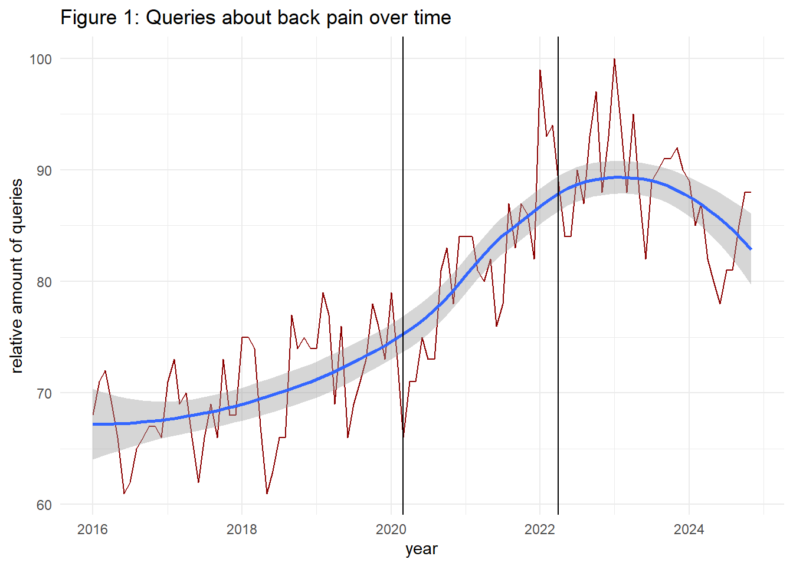

#Preliminaries:
knitr::opts_chunk$set(message=FALSE, warning=FALSE)
rm(list=ls())
library(tidyverse)
library(lubridate)
library(viridis)
#library(devtools)
#devtools::install_github("PMassicotte/gtrendsR") # installation from github necessary
library(gtrendsR)
library(forecast)
library(jtools)
library(sandwich)
theme_set(theme_light())
dir.create("filesTrends", showWarnings = FALSE)Back pain is a common global health problem, driven by an ageing population and insufficient or inappropriate physical activity. In addition, from 2020 onward, physical exercise decreased strongly due to policies implemented to mitigate the COVID-19 pandemic. Furthermore, while working from home became the norm during this time, many people lacked ergonomic setups, potentially further intensifying the issue. Hence, a natural question arises: did the political lockdowns negatively influence the prevalence of back pain?
But how can changes in back pain over time be detected? One approach is to use Google Trends, which provides quasi-instant access to aggregated queries from Google users. For example, Hoerger et al. (2020), Knipe et al. (2020), and Brodeur et al. (2021) used Google Trends to study the impact of the pandemic on mental health and well-being. Szilagyi et al. (2021) compared queries for back pain, before and after the pandemic, while Ciaffi et al. (2021) analyzed the seasonality of back pain in Italy. In the following analysis, we see how health issues can be traced back to the COVID-19 pandemic by combining Google Trends data from Germany with statistical methods.
Let us examine the relative frequency of internet queries for back pain-related keywords from 2016 onward. We focus on queries from Germany and assume that the back pain synonyms ‘Rückenschmerzen’, ‘Rücken Schmerzen’, ‘Rückenschmerz’, and ‘Rücken Schmerz’ reflect overall interest in this topic, serving as a proxy for the associated burden of disease over time. The data is provided on a monthly level.
#trends <- gtrends(keyword = c("Schmerz Rücken + Rückenschmerz + Schmerzen Rücken + Rückenschmerzen"), time = '2016-01-01 2024-11-30', geo="DE")
#write_rds(trends, "filesTrends/trends_ruecken20241227.rds")
trends <- read_rds("filesTrends/trends_ruecken20241227.rds")
#transform important variables
trends$interest_over_time <- trends$interest_over_time |>
mutate(date=as.Date(date))
#Visualize Backpain over time
trends$interest_over_time |>
ggplot() +
geom_line(aes(x=date, y=hits), color = "darkred") +
geom_smooth(aes(x=date, y=hits)) +
geom_vline(xintercept=c(as.Date('2020-03-01'), as.Date('2022-04-01'))) +
theme_minimal() +
scale_colour_viridis_d(option="viridis") +
labs(y="relative amount of queries", x="year", title="Figure 1: Queries about back pain over time")
Figure 1 shows that the relative number of queries steadily increased over time before the lockdown, indicating a positive time trend. During the lockdown period (marked with the 2 vertical lines) back pain-related queries increased even more – likely due to the lockdown – peaking at the end of 2022 before declining afterward. To better understand the data structure before the treatment let us decompose trend, seasonality, and error (using just complete 12-year periods):
#create time series:
ts_in <- trends$interest_over_time |>
filter(date>= '2016-01-01' & date<= '2019-12-31') |>
mutate(Jahr=year(date)) |>
select(hits) |>
pull()
back_ts <- ts(ts_in, start = c(2016, 1), frequency = 12)
dcp <- mstl(back_ts, s.window="periodic")
autoplot(dcp) +
labs(title="Figure 2: Multiple seasonal decomposition of back pain queries")A monthly seasonal pattern can be seen which we should keep in mind when analyzing the relationship between the pandemic and back pain. Also, due to the time structure of our data, autocorrelation is a potential issue we should be aware of.
ggAcf(back_ts) +
labs(title="Figure 3: Autocorrelation plot (back pain queries)")A visual inspection of Figure 3 reveals a strong autocorrelation in the time series across up to 13 monthly lags. Let us now assess whether the COVID-19 period is statistically associated with Google queries for back pain. We apply segmented regression analysis (e.g. Wagner et al. 2002; Jebb et al. 2015; Xiao, Augusto, and Wagenaar 2021) assuming an interrupted linear time trend in our model, using data from 2016 until the end of March 2022. This period includes the most rigorous lockdown policies.
The dependent variable, \(hits_t\), represents the relative amount of queries for back pain over months \(t\) and is considered in logarithmic form. The explanatory integer variable \(time_t\) accounts for an assumed (partly counterfactual) linear time trend. Since lockdown policies began in Germany on 2020-3-16, we test for a level change after the lockdown’s start by adding a dummy variable \(A_t\) to the specification. To test for gradual changes of interest in back pain during the lockdown period, we include the interaction term \(A_t\times (time_t-\tau)\), \(\tau\), indicating the time index for the first lockdown. This leads to the following regression equation:
\(log(hits_t) = \beta_0 + \beta_1\,time_t + \beta_2\,A_t + \beta_3\,A_t\times (time_t- \tau) + \epsilon_t\)
Finally, dummy variables for each month are added to our specification in order to capture the seasonality of queries for back pain, as discussed above. Autocorrelated residuals are addressed by applying Newey-West standard errors with a lag length of 3.
data_impact <- trends$interest_over_time |>
filter(date<='2022-03-31') |> # restrict data on relevant time period
arrange(date) |>
mutate(time=row_number()-1, # set first observation of time index to zero
month=as.factor(month(date)), hits_l1=dplyr::lag(hits),
after=if_else(date>=as.Date('2020-03-16'), 1, 0),
tau=min(ifelse(after==1, time, NA_integer_), na.rm=TRUE), # minimal time index after treatment
time_diff=time-tau, A_TimeDiff=after*time_diff) # centering, create interaction term
lm_out <- lm(log(hits) ~ time + month + after + A_TimeDiff, data=data_impact)
ipct_out <- round(exp(lm_out$coefficients["A_TimeDiff"])*100-100, 3)
summ(lm_out, vcov=NeweyWest(lm_out, lag=3, prewhite=TRUE, adjust=TRUE), digits = 3) | Observations | 75 |
| Dependent variable | log(hits) |
| Type | OLS linear regression |
| F(14,60) | 27.044 |
| R² | 0.863 |
| Adj. R² | 0.831 |
| Est. | S.E. | t val. | p | |
|---|---|---|---|---|
| (Intercept) | 4.254 | 0.020 | 207.852 | 0.000 |
| time | 0.002 | 0.001 | 3.029 | 0.004 |
| month2 | -0.004 | 0.019 | -0.233 | 0.817 |
| month3 | -0.038 | 0.030 | -1.268 | 0.210 |
| month4 | -0.078 | 0.021 | -3.794 | 0.000 |
| month5 | -0.095 | 0.030 | -3.151 | 0.003 |
| month6 | -0.144 | 0.016 | -8.779 | 0.000 |
| month7 | -0.120 | 0.012 | -9.658 | 0.000 |
| month8 | -0.085 | 0.018 | -4.681 | 0.000 |
| month9 | -0.054 | 0.023 | -2.392 | 0.020 |
| month10 | -0.022 | 0.017 | -1.353 | 0.181 |
| month11 | -0.053 | 0.018 | -2.895 | 0.005 |
| month12 | -0.063 | 0.026 | -2.430 | 0.018 |
| after | 0.019 | 0.019 | 1.025 | 0.309 |
| A_TimeDiff | 0.005 | 0.001 | 4.083 | 0.000 |
| Standard errors: User-specified |
The level change after treatment is positive but lacks statistical
significance (p>0.05). However, compared to the baseline, we find a
steady increase in relative queries from the beginning of the lockdown
onward (p<0.05). From this point, queries increased approximately
\((e^{\hat{\beta}_3}-1)\cdot100=\)0.546
percent each month – in addition to the assumed counterfactual time
trend \(\beta_1\). These findings
suggest a higher increase in back pain queries over time, rather than an
immediate jump in searches after the lockdown began. In summary, our
regression shows that the COVID-19 period is associated with a higher
share of queries for back pain, given a linear time trend and seasonal
adjustments. It seems that, although people were spared from COVID-19
infections, there were negative external effects on other health
outcomes in Germany, including back pain. Fortunately, we also know from
above that interest in back pain began to decline from 2023 onward,
nurturing the hope that the increase in back pain was a temporary
phenomenon.
We observed a substantial increase in the relative interest in back pain based on online queries using Google Trends data from Germany. From a policy perspective, sufficient health care supply is necessary to ensure optimal treatment of back pain and avoid chronic conditions. Employers could support ergonomic resources and health campaigns for remote workers. Self-care is another critical aspect of back pain management to develop individual exercise routines and increase physical activity. Digital services can also play a role by providing easy access to relevant information.
One thing we should keep in mind is that Google Trends reflects the relative importance of queries compared to all queries at a specific location and time. Overall internet queries increased strongly in 2020, so our results suggest back pain queries increased even more strongly. A limitation of this analysis is that higher online searches for back pain do not necessarily equate to an increase in back pain prevalence, but could indicate a higher awareness about this topic. Also, assuming a higher prevalence, the declining interest in back pain from 2023 onward gives hope that the increase may have been a temporary phenomenon during the pandemic.
In addition, the analysis shows the value of process-data from internet companies in answering important questions. As Stephens-Davidowitz (2018) argues, internet searches often reflect people’s thoughts and motivations more honestly than survey responses.